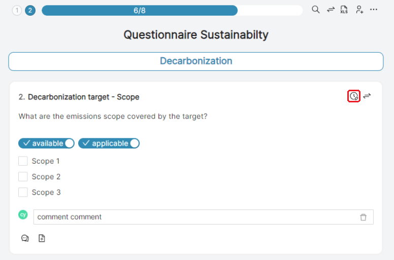
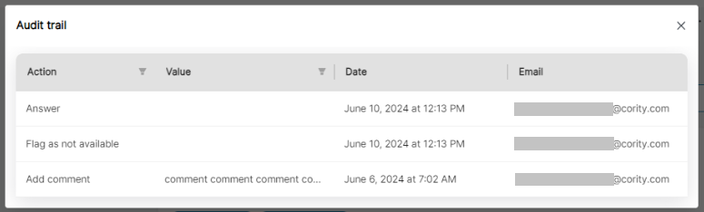

R21P-585: An Audit Trail is now provided for question responses, comments, and attachments.
The Audit Trail allows users to view a detailed history of all changes made to each response, comment, and attachment. That includes each change that was made, who made the change, and when the change occurred. The Audit Trail is accessible to the respondent and the editor, which enables both to monitor and review the activity.
This feature will help ensure transparency, traceability, and accountability.
A new icon is provided for accessing the Audit Trail. The icon (encircled in red below) is available wherever responses, comments, or attachments are managed. The icon, therefore the trail, is available to any user with either the Respondent or Editor role.

When a user clicks the icon, the Audit Trail modal box will display.

The Audit Trail provides a list of all audit records related to responses, comments, and attachments. Each record includes the following information:
Action: Indicates whether the action was performed on a response, comment, or attachment.
Date: Indicates the date and time the action was performed.
Email: Provides the email address of the user who performed the action.
Value: Summarizes the change that was made.
The Audit Trail provides search functionality at the top that allows users to filter the audit records based on the following:
Type of Action/Record: Users can filter by response, comment, or attachment.
Value: Users can filter by the value entered
When applicable, the Audit Trail provides pagination for browsing through records.
The Audit Trail is responsive and accessible on different devices, including desktops, tablets, and smartphones.
All data within the Audit Trail will be securely stored and transmitted (ensuring data security and privacy).